Префектура Токусима · город Токусима и юго-восток · вода и обновлённые места
Токусима, город воды: реки, круизы и обновлённые старые места
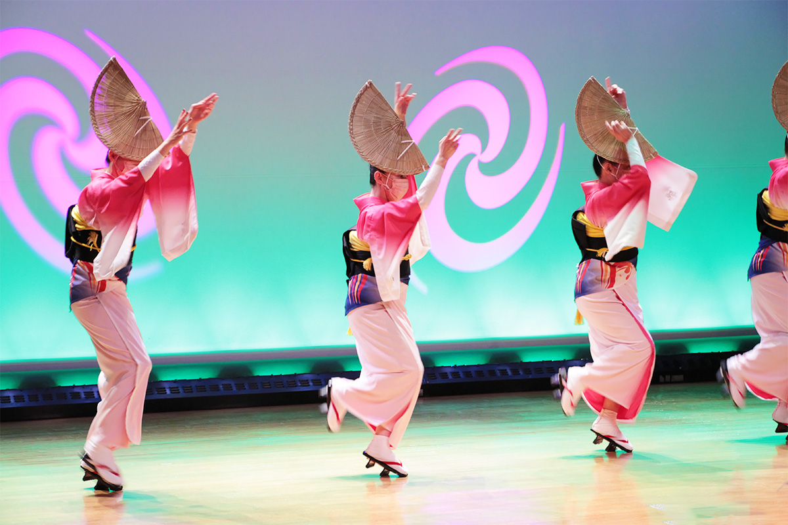
Реки делят Токусиму на части, и город давно живёт с водой в согласии: по рекам ходят прогулочные лодки, у самой воды открылись старые склады, а рядом с ними растут новые места. Рассказываем, куда отправиться в городе воды и что искать в его окрестностях.
Круиз
Река, которая вернула город к воде
Первая остановка: река Симмати, она течёт с севера на юг через центр города. В этой дельте, где насчитывают 138 больших и малых рек, город рос вместе с водой. Вдоль набережных проложили прогулочные дорожки, разбили парки у воды, и теперь это любимое место отдыха горожан.
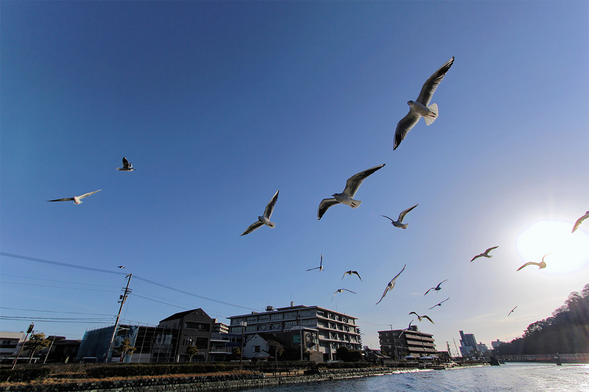
Так было не всегда. В годы быстрого экономического роста реку загрязнили, и ещё лет тридцать назад в дни праздника Ава-одори в воду распыляли дезодорант от запаха. Горожане тогда жили, отвернувшись от реки.
Перелом наступил в 1990 году. Десять человек во главе с Хидэо Накамурой основали некоммерческую организацию «Хранители реки Симмати». Всё началось с гонки на плотах: Накамура, выросший в этом городе и с детства любивший реку, устроил её для ребят и ужаснулся тому, во что превратилась вода.
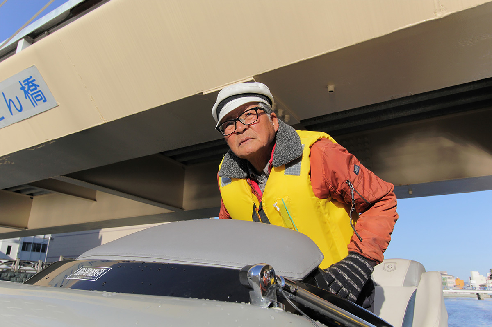
«С марта 1990 года мы каждый месяц без пропусков чистили Симмати. Говорят, и на камне через три года трава прорастёт, а у нас вода стала чистой лет через десять. Теперь к нам идут молодёжь и компании, и мысль заботиться о своей реке укрепилась в людях.»
Хидэо Накамура, капитан прогулочной лодки и председатель организации
«Мы мечтали сделать город, в котором приятно жить. И дело шло легче потому, что кроме уборки мы устраивали и посиделки, и другие радости.»
Хидэо Накамура
Благодаря этим усилиям город стал строить жизнь вокруг рек, и люди вернулись к воде. У здешних активистов особая черта: они не ждали помощи властей и всё делали сами.
На Симмати стоит прокатиться на открытой лодке «Хётан-дзима», что значит «остров-тыква»: её водит сам Накамура. Центр города окружён реками и по форме похож на тыкву, отсюда и название. По берегам тянутся старинные места, по которым читается история города. Земля тут низкая, мосты тоже низкие, и каждый раз, когда лодка проходит под мостом, капитан командует: «Пригните головы!» Тридцать минут по реке показывают Токусиму и старую, и новую.
Круиз «Хётан-дзима»
- Адрес
- город Токусима, Минамиути-тё, 2, парк у воды на реке Симмати
- Телефон
- +81 90-3783-2084 (организация «Хранители реки Симмати»)
- Часы работы
- 11:00–15:40, отправление каждые 40 минут; вечерний круиз 17:00–19:40
- Цены
- взрослый 800 иен, школьник 600 иен, ребёнок 400 иен; вечерний круиз взрослый 1 000 иен, школьник 800 иен, ребёнок 500 иен
Причал
Складской квартал Мандай-Тюо
В пяти минутах на машине от станции Токусима, у устья реки Симмати, стоит складской квартал Мандай-Тюо. С 1960-х годов он был важным морским узлом, но суда стали крупнее, причалы обветшали, и порт переехал за мыс. Осталась улица складов длиной около 500 метров: теперь в них открылись кафе и рестораны, магазины старой одежды и интерьеров, спортзал и частный парк.
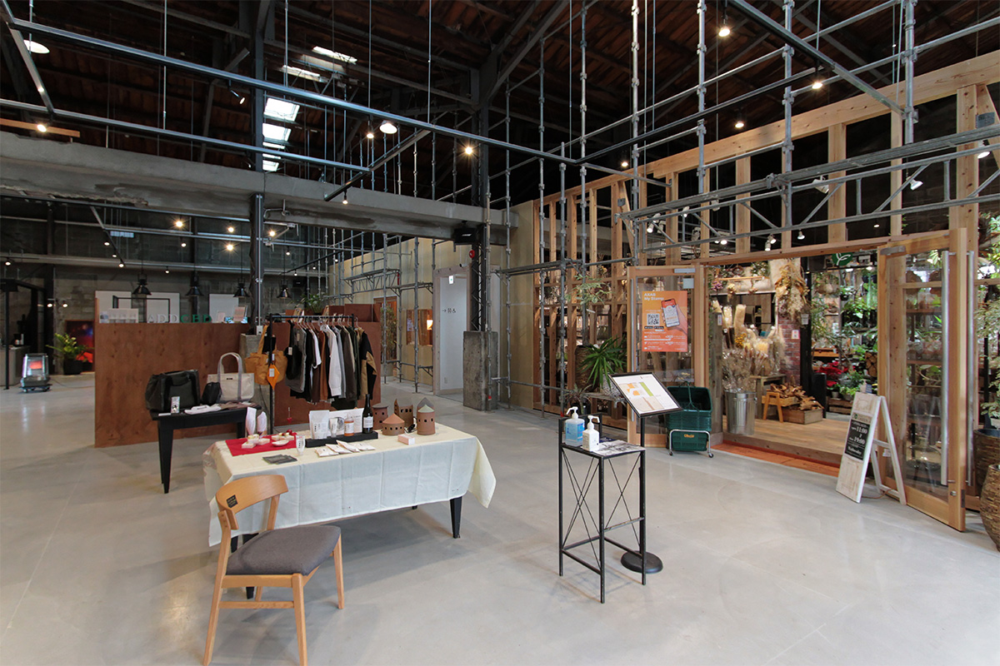
Всё это оживляет некоммерческая организация «Аква Читта», созданная в 2005 году. Её директор с самого начала думал, как вернуть кварталу жизнь. Здесь проводят фестиваль «Аква Читта», приглашали архитекторов и знатоков на саммит складов, устраивали музыкальный фейерверк, когда на набережной играет живая музыка, и гастрономические праздники.
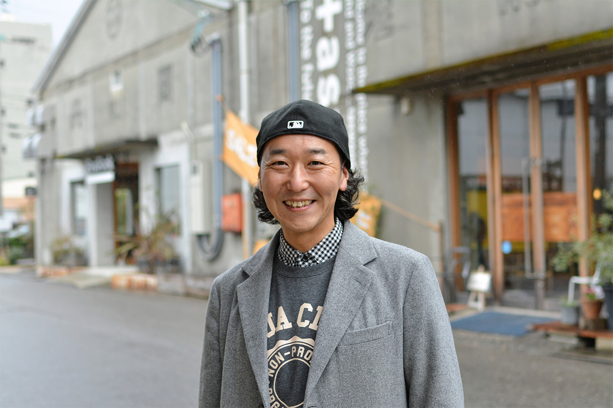
Добраться до складов можно и по воде: из центра города сюда приходят тот же круиз «Хётан-дзима» и водное такси. Для гостей это ещё и прогулка по городским рекам.
Аква Читта, складской квартал Мандай-Тюо
- Адрес
- город Токусима, Мандай-тё, 5-71-4
- Телефон
- +81 88-679-8001
- Сайт
- aquacitta.com
Дорога
Автобус, который едет и по рельсам
За городом дорога уходит на юго-восток Сикоку, и за окном тянутся мягкие холмы и деревушки. Здесь по берегу ходит диковинный транспорт: двухрежимный автобус-поезд, который называют ДМВ. Это первый в мире автобус такого типа, вышедший на регулярную коммерческую линию. По шоссе он едет как автобус, а на рельсах становится поездом, и пересаживаться не нужно.
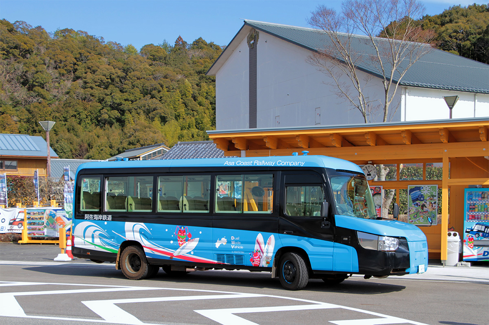
Всё устроено как небольшое шоу: у культурной деревни Ава-Кайнан вы садитесь в автобус, он катит через тихий городок, а на станции Ава-Кайнан на рельсы опускаются железные колёса, и примерно за пятнадцать секунд автобус становится поездом. Дальше двадцать минут пути вдоль моря, с туннелями и видом на воду. Такого сочетания двух видов транспорта без пересадки больше нет нигде. Для обезлюдевших городков это редкая ниточка, связывающая людей, и важная инфраструктура: после стихийных бедствий такую линию можно быстро восстановить. Мест немного, поэтому билет лучше бронировать заранее.
Кроме поездки туристов ждут велосипедные маршруты, доски с веслом и сёрфинг, а ещё местная еда: лангуст, морское ушко и ракушка турбо.
Аса Кайган тэцудо
- Адрес
- уезд Кайфу, посёлок Кайё, Сисикуиура, Масакадзи, 22-1
- Телефон
- +81 884-76-3701
- Сайт
- asatetu.com
Гавань
Порт Хивасы: лангуст и старая рыбацкая улица
Тот же юго-восток известен едой. В порту Хиваса ловят лангустов, и местные рыбаки давно ведут ресурсосберегающее хозяйство: ограничивают дни лова, число сетей и размер добычи. Благодаря этому на порт приходится четверть с лишним всей добычи лангуста в префектуре.
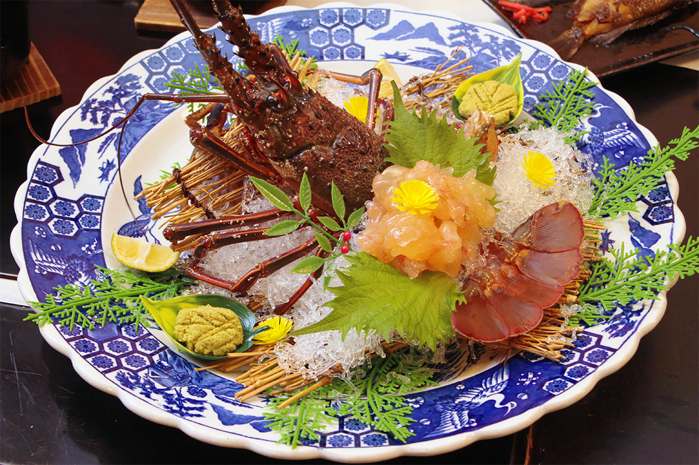
Прямо напротив порта стоит ресторан «Тэкоя»: зимой, когда открывают сезон, здесь подают сасими из лангуста. Столик лучше заказать заранее.
Тэкоя
- Адрес
- уезд Кайфу, посёлок Минами, Хивасаура, 41-1
- Телефон
- +81 884-77-0073
- Часы работы
- 11:30–13:00, 17:30–20:00
- Выходные
- понедельник
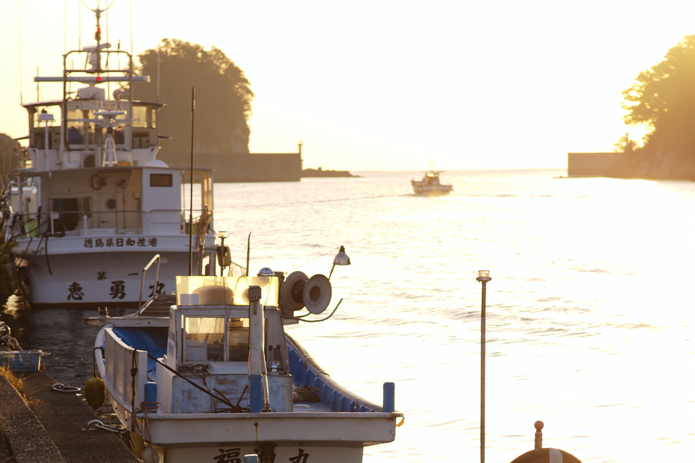
Рядом, среди улиц рыбацкого городка Хиваса, стоит здание с особенно красивым фасадом. Это бывшая общественная баня, которой больше ста лет. Теперь здесь штаб-квартира компании «Аваэ»: её основатель, родившийся в Хивасе, открыл в 2012 году удалённый офис с видом на море. Сотрудникам обещают серфинг в обеденный перерыв, а местным помогают разобраться со смартфоном. Для путешественника, которому нужен тихий уголок для работы в поездке, это надёжный помощник.
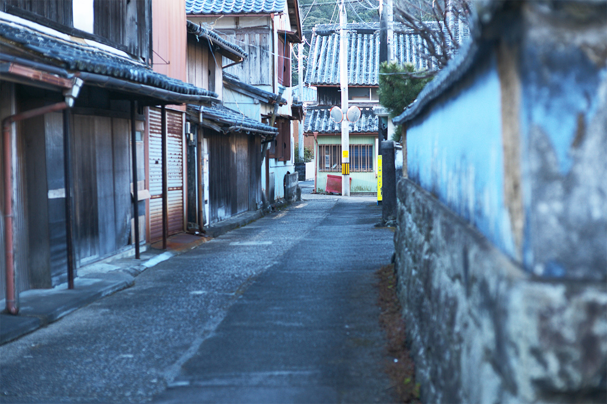
Аваэ, штаб-квартира в Минами
- Адрес
- уезд Кайфу, посёлок Минами, Хивасаура, 114
- Телефон
- +81 884-70-5831
- Сайт
- awae.co.jp
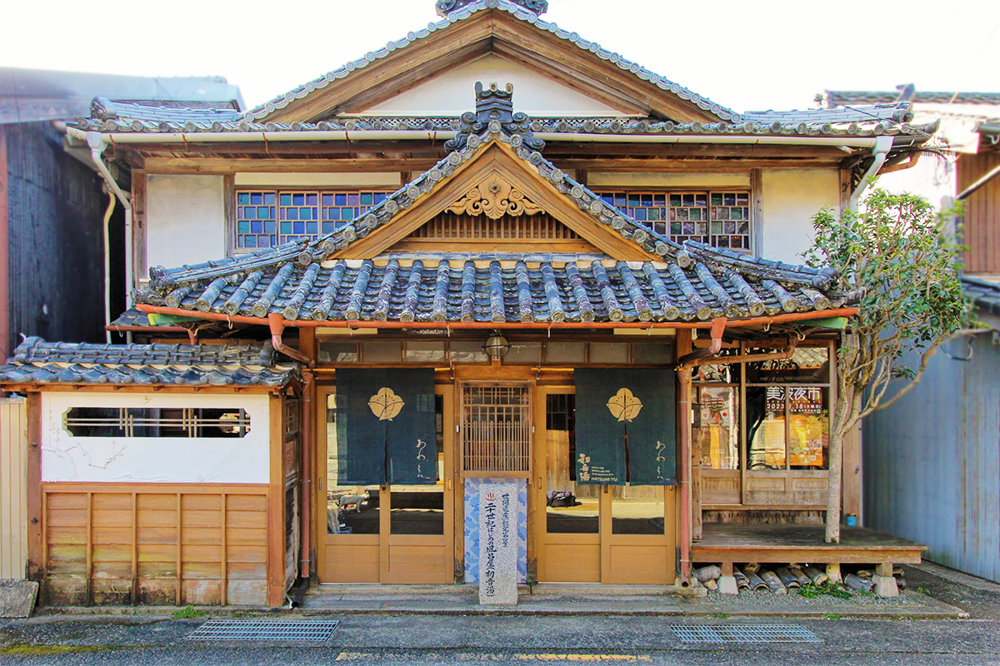
Танец
Ава-одори в любое время года
Токусима немыслима без Ава-одори, одного из главных летних праздников Японии. Танцуют его больше четырёх веков, с эпохи Эдо, и в Зале Ава-одори можно увидеть его в любой день. Днём и вечером на сцену выходят танцоры под громкие барабаны и флейты, выступление длится сорок минут.
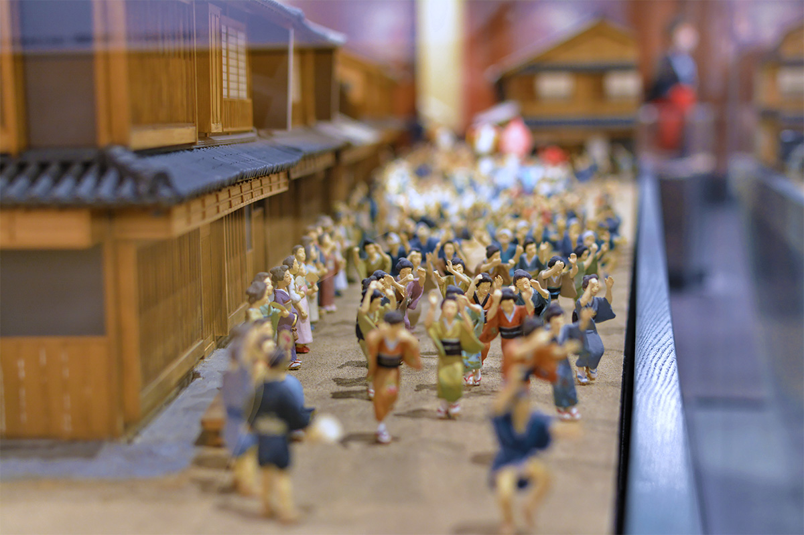
Внутри есть магазин сувениров, музей Ава-одори, где рассказывают об истории танца, и нижняя станция канатной дороги на вершину горы Бидзан, откуда открывается вид на всю равнину. А в начале лета вдоль реки Симмати уже слышны первые репетиции.
Зал Ава-одори
- Адрес
- город Токусима, Симматибаси, 2-20
- Телефон
- +81 88-611-1611
- Часы работы
- «Арэдэё Токусима» и зал Ава-одори 9:00–21:00, музей Ава-одори до 17:00, канатная дорога на Бидзан до 21:00 (апрель–октябрь), до 17:30 (ноябрь–март)
- Выходные
- вторая среда февраля, июня, сентября и декабря (или следующий день, если он праздничный), 28 декабря–1 января
- Цены
- дневное выступление взрослый 800 иен, школьник 400 иен; вечернее выступление взрослый 1 000 иен, школьник 500 иен; музей Ава-одори взрослый 300 иен (дети до 14 лет бесплатно); канатная дорога взрослый и школьник 1 030 иен (туда и обратно), младший школьник 510 иен (туда и обратно)
- Примечание
- есть наборные билеты
Сладости
Ваданэя и вода у горы Бидзан
У подножия горы Бидзан бьёт источник Кинрёсуй. Ещё в эпоху Эдо горожане покупали эту воду для питья. В лавке «Ваданэя» готовят по ней сладость «таки-но якимоти»: её подносили в дар в 1586 году, когда строили замок Токусима. Есть три вкуса: белый, кунжутный и с зелёным чаем.
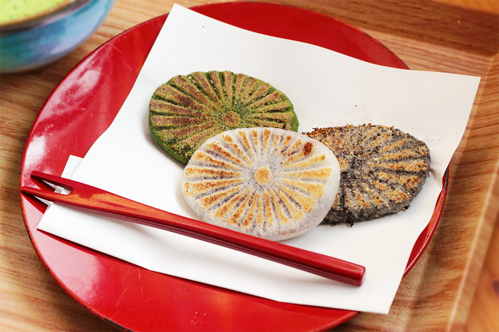
Рассказывают, что съесть якимоти перед смотринами к свадьбе значит договориться о деле. Из зала на втором этаже видно жёлтые цветы на склоне Бидзана. Здесь же подают зелёный чай на той самой воде, а летом и какигори со сладким сахаром васамбон.
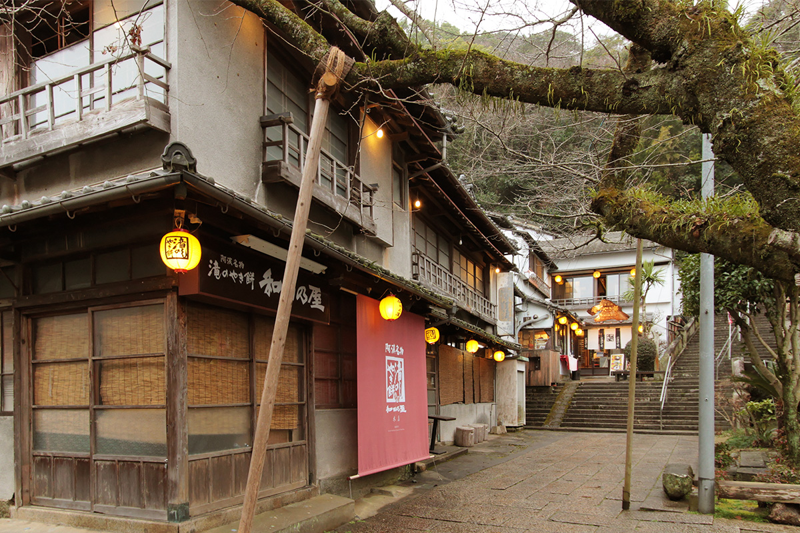
Ваданэя
- Адрес
- город Токусима, Бидзан-тё, Отакияма, 5-3
- Телефон
- +81 88-652-8414
- Часы работы
- 10:00–17:00
- Выходные
- четверг
- Сайт
- wadanoya.com
Стена
Цунагу-стрит: возвращение росписи
В районе Накагава города Анан есть стена-роспись длиной 2,8 километра. Её сделали около тридцати лет назад, замахиваясь на самую длинную роспись в мире: в работе участвовали около семи тысяч человек. Потом краски выгорели на морском ветру, часть росписи исчезла, а вокруг выросла свалка.
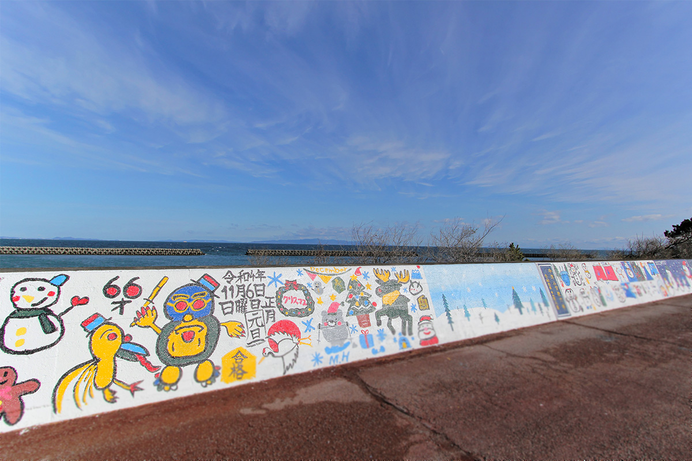
В 2015 году молодые члены торгово-промышленной палаты, которые детьми сами рисовали эту стену, начали её возрождать. С помощью сбора средств, детей, родителей и компаний за четыре года удалось заново расписать один километр. Роспись завершат к 2032 году. Проект хранит память места и создаёт новый пейзаж, связывая настоящее Токусимы с будущим.
Цунагу-стрит
- Адрес
- город Анан, Накагава, Ёсисаки, 389-2
- Телефон
- +81 884-42-1772
Ферма
Клубника в Анане
В городе Анан есть ферма, где собирают клубнику и голубику редких сортов. Здесь работают бережно: воду фильтруют, защищают растения от насекомых бамбуковым углём, используют органические удобрения и почти не применяют химические средства.
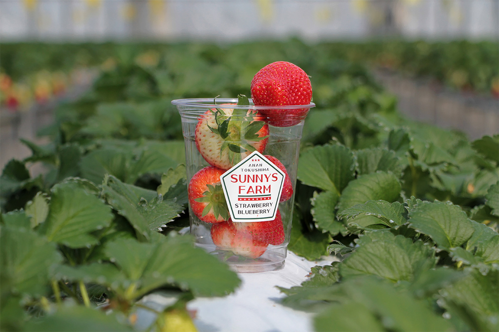
Хозяин фермы, потомственный рисовод, выращивает и органический рис, а ещё помогает развивать округу: придумывает продукты из местной рыбы и фермерских плодов. Посетителям он даёт собрать клубнику самим, по сезону.
Ферма Санниз
- Адрес
- город Анан, Нанами, Фукаэ, 541 (перед спорткомплексом «Сан-Арена»)
- Телефон
- +81 884-23-3520
- Часы работы
- сбор в 10:00, 11:00, 13:00, 14:00
- Выходные
- по субботам, воскресеньям и в праздники по записи, в будни по договорённости
- Цены
- клубника взрослый 2 800 иен, младший школьник 1 400 иен, дети от трёх лет 800 иен (час без ограничений, по записи)
- Сайт
- sunnys-farm.com
Поездка
Клуб «Колтс»: знакомство с лошадьми
Клуб «Колтс» открыл в 1996 году местный житель, выросший в семье, где держали лошадей. На просторных лугах живут миниатюрные лошадки, пони и бывшие скакуны, а рядом козы, кролики, кошки и собаки.
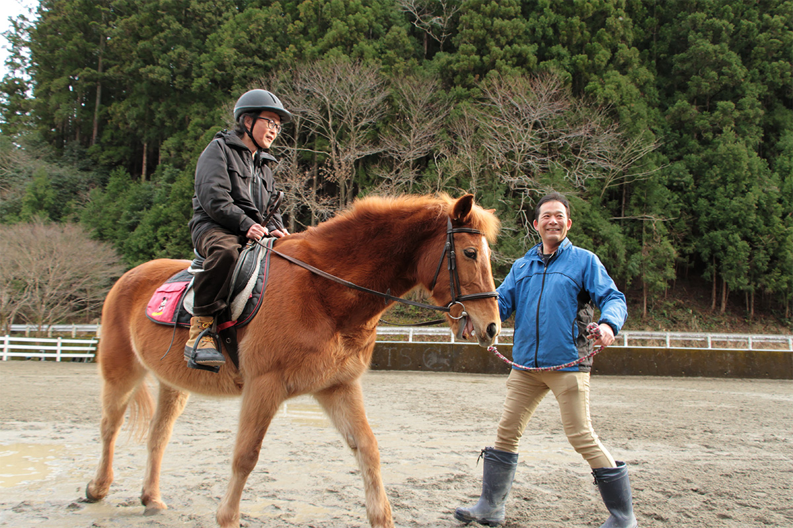
Прогулки верхом и уроки ведут опытные инструкторы, так что новичкам спокойно. Хозяин клуба так любит лошадей, что принимает и отставных скакунов, ради них сюда приезжают даже те, кто когда-то болел за этих лошадей на ипподроме.
Клуб «Колтс»
- Адрес
- уезд Нака, посёлок Нака, Танюти-Накабун, 103
- Телефон
- +81 884-62-3434
- Часы работы
- 9:00–17:00 (по записи)
- Выходные
- без выходных
Ночлег
Гостевой дом «Оядо Хиваса»
У реки Хиваса, у самых ворот храма Якуодзи, стоит гостевой дом без питания. Его открыл француз-яхтсмен, который влюбился в город и дом и вместе с женой-японкой начал здесь дело в июле 2015 года.
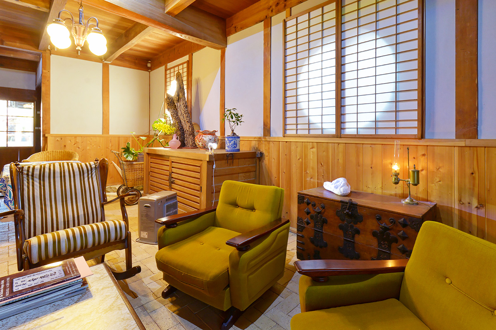
В холле и комнатах собраны старинные вещи из местных домов и корейский комод возрастом около трёхсот лет, а ещё висят работы хозяина-художника. Само здание из японского кипариса построено в 1918 году, и его можно считать такой же древностью.
Оядо Хиваса
- Адрес
- уезд Кайфу, посёлок Минами, Окукоути, Хонмура, 148-1
- Телефон
- +81 80-9830-3920 (с 10:00 до 19:00)
- Цены
- от 4 500 иен за ночь без питания
- Сайт
- oyadohiwasa.com
Вино
Бар «Мируан» в Хивасе
На главной улице Хивасы, где на песок выходят откладывать яйца красные морские черепахи, стоит бар «Мируан». Его открыли в 2021 году в переделанном магазине деревянных сандалий гэта. Хозяин, сын владельца гостевого дома, четырнадцать лет занимался импортом вина и сам подбирает бутылки: от простых на каждый день до редких и странных. В меню европейские блюда с пряностями, а к ним кускус. До гостевого дома отсюда две минуты пешком.
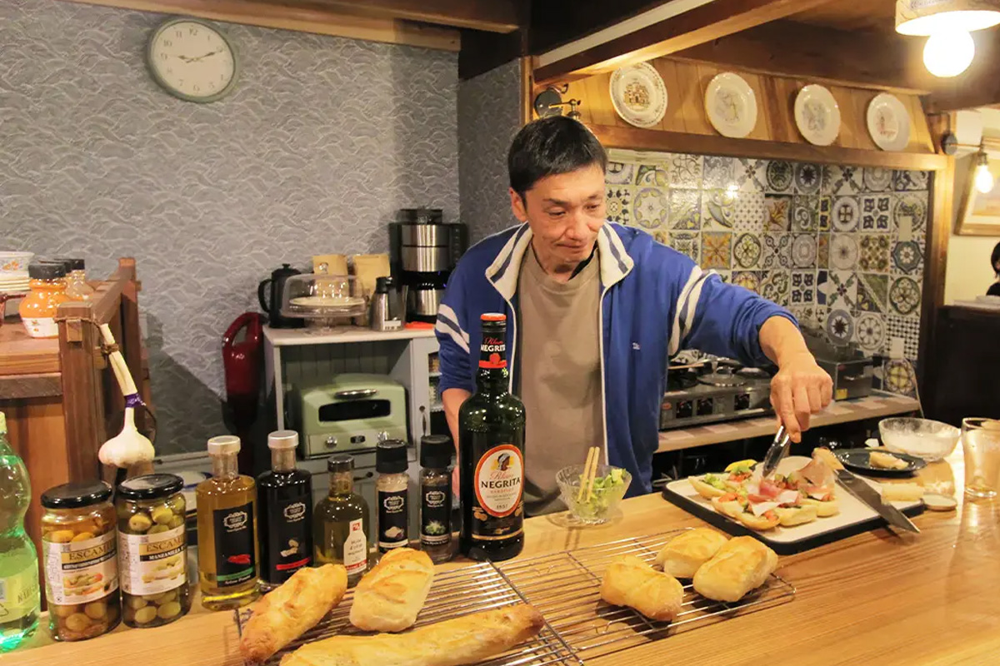
Мируан
- Адрес
- уезд Кайфу, посёлок Минами, Хивасаура, 125
- Часы работы
- 18:30–22:30 (последний заказ 21:30)
- Выходные
- по записи, выходные плавающие
Сладости
Дзюития и Курамото: сладости Хивасы
В Хивасе две старые кондитерские. «Дзюития» работает с 1866 года: здесь делают вагаси «Хивасадзё», монака с хрустящим тестом и сладкой бобовой пастой. Кроме сезонных сладостей и дораяки с домашней пастой, здесь пекут тимаки и сакура-моти. Одна «Хивасадзё» стоит 110 иен.
Дзюития
- Адрес
- уезд Кайфу, посёлок Минами, Окукоути, Хонмура, 91
- Телефон
- +81 884-77-0158
- Часы работы
- 7:00–19:00
- Выходные
- плавающие
В лавке «Курамото» хозяйничает третье поколение семьи. Вывеску с необычным шрифтом сделал местный архитектор. Каждую зиму, с ноября по декабрь, здесь вручную делают конфеты «якуёкэ-амэ»: их готовят с 1928 года и дарят, желая здоровья и защиты от бед. Твёрдую пластину конфеты разбивают ударом, а из осколков делают сладость «звёздную пыль».
Курамото сэйка
- Адрес
- посёлок Минами, Окукоути, Тэрамаэ, 100-1
- Телефон
- +81 884-77-0068
- Часы работы
- 9:00–18:30, по воскресеньям 10:00–16:00
- Выходные
- плавающие
Лавка
«Сёппинг Дайкоку» и ресторан «Тэйку Санд»
На самом юге префектуры, в городке Сисикуи, с 1970 года работает супермаркет «Сёппинг Дайкоку». Одно время он был на грани закрытия, но его возродили, позвав третьим директором человека с необычной биографией. Ассортимент остался местным, но к нему добавили редкие органические вина, биодинамические бутылки, ветчину и ростбиф собственного производства.
Сёппинг Дайкоку
- Адрес
- уезд Кайфу, посёлок Кайё, Сисикуиура, Сисикуи, 435-1
- Телефон
- +81 884-76-2135
- Часы работы
- 9:00–18:30, по воскресеньям 10:00–16:00
- Выходные
- второе и четвёртое воскресенье
- Сайт
- shopping1970.com
При супермаркете открыт ресторан «Тэйку Санд». Здесь любят местное и органическое и хотят через еду показать людям другой взгляд на мир. Раз в месяц устраивают «детскую столовую». С террасы открывается вид на море.
Тэйку Санд
- Адрес
- уезд Кайфу, посёлок Кайё, Сисикуиура, Мацубара, 219-1
- Телефон
- +81 80-7303-2925
- Часы работы
- обед 11:00–15:00 (последний заказ 14:30), ужин в субботу 17:00–21:00 (последний заказ 20:30)
- Выходные
- понедельник (в праздники открыт)
В Токусиме умеют сохранять своё и обновлять старое. Здесь веками живут индиго и соль, а с ними и культура ферментации: природа подсказывает, как вести хозяйство и строить жизнь. Оглядываясь на то, что осталось, город создаёт новое.